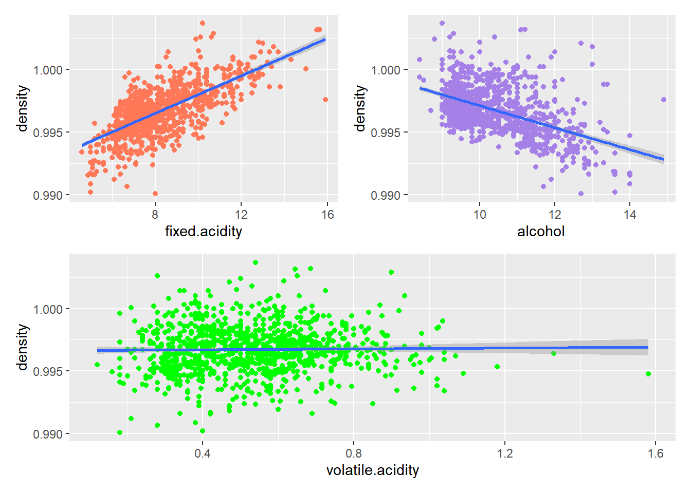

Variables Exhaustivo Heurístico
1 5 32 16
2 10 1024 56
3 15 32768 121
4 20 1048576 211
5 25 33554432 326
6 30 1073741824 466
7 35 34359738368 631
8 40 1099511627776 821
9 45 35184372088832 1036
10 50 1125899906842624 127610 Controlando la flexibilidad del modelo de regresión lineal
Existen diversos métodos para comparar modelos lineales. La flexibilidad del modelo se puede medir en términos del número de variables, de tal forma que entre más variables tenemos en un modelo lineal, más flexible es. Hay varias formas de controlar esta flexibilidad:
10.1 Selección de variables
Suponga que se tiene un modelo lineal con \(p\) variables \[y_i = \beta_0 + \beta_1 x_{i1} + \beta_2 x_{i2} +...+ \beta_p x_{ip} + \epsilon_i\]
El objetivo es determinar cuáles de estas variables deben ir en el modelo final. Para comparar modelos tenemos diversos criterios. El \(R^2\) es útil para comparar modelos con igual número de variables. En caso de que tengan diferente número de variables, tenemos alternativas como: \(R_{adj}^2\), \(AIC\), \(C_p\) y \(BIC\).
10.1.1 selección exhaustiva:
Se ajustan todos los modelos posibles, desde el modelo con 0 variables (solo el intercepto) hasta el modelo con todas las \(p\) variables. Se comparan de forma adecuada para obtener el “mejor” modelo. Este método implica ajustar \(2^p\)1 submodelos, lo cuál puede fácilmente convertirse en algo imposible de llevar a cabo en la práctica, dado su costo computacional.
1 corresponde a la suma de todos los modelos de 0, 1, 2, …, k, …, p variables \[\binom{p}{0} + \binom{p}{1} + \cdots + \binom{p}{p} = \sum_{k=0}^{p}\binom{p}{k} = 2^p\]
10.1.2 Métodos heurísticos: Selección hacia adelante o hacia atrás.
Para evitar el crecimiento exponencial en la cantidad de modelos a ajustar, se puede optar por un procedimiento heurístico de selección hacia adelante o hacia atrás. En el caso de selección hacia adelante, se inicia con el modelo que no contiene variables (\(\mathcal{M}_0\)), y se forman \(p\) modelos univariados agregando cada una de las \(p\) variables, se escoge el mejor de estos modelos (que puede ser elegido con el \(R^2\) ya que tienen el mismo número de variables), llamemos a este modelo \(\mathcal{M}_1\). A \(\mathcal{M}_1\) se le agrega cada una de las \(p-1\) variables restantes y se elige el mejor modelo de 2 variables: \(\mathcal{M}_2\). Al final se tendrán \(1 + \frac{p(p+1)}{2}\)2 modelos: \[\mathcal{M}_0, \mathcal{M}_1, \mathcal{M}_2, \cdots, \mathcal{M}_p\] Para elegir entre estos modelos, no es adecuado el \(R^2\) (¿por qué?) y debe recurrirse a medidas tales como: \(R_{adj}^2\), \(AIC\), \(C_p\) y \(BIC\), sin olvidar que para el \(R_{adj}^2\) se busca el modelo con mayor valor, y para el resto de métricas se busca el menor valor (¿por qué?). También es posible hacer Cross Validation (CV) y elegir el modelo con menor \(MSE_{cv}\), pero para el caso de regresión lineal, no es necesario hacerlo (¿por qué?).
2 Es fácil comprobar que \[1 + p + (p-1) + (p-2) + \cdots + 1 = 1 + \sum_{k=1}^{p}k = 1 + \frac{p(p+1)}{2}\]
En la tabla, se muestra cómo crece la cantidad de modelos a ajustar según la metodología: exhaustivo o heurístico.
Es claro que el método secuencial ofrece ventajas en cuánto a la cantidad de modelos que se deben ajustar, sin embargo, es probable que el resultado de estos procedimientos no sea el modelo óptimo (¿por qué?)
10.1.3 Combinación de métodos
En algunos casos (cuando hay muchas variables), incluso un método secuencial puede resultar poco atractivo para la selección de variables. Para estos casos, se puede establecer un límite, por ejemplo, si se usa selección hacia adelante, se pone una cota \(L\) al número de variables a incluir, siendo \(L<<p\). También es posible combinar (piense bien cómo sería eso) los métodos de selección hacia adelante y hacia atrás, esto con el fin de aumentar la probabilidad de llegar al modelo óptimo.
10.2 Métodos tipo penalización
Un enfoque alternativo a la selección directa de variables, para el control de la flexibilidad del modelo lineal, es la penalización. La idea es considerar el modelo completo con las \(p\) variables y encoger el efecto de dichas variables a través de una penalización. Recuerde que el método de mínimos cuadrados, resuelve el problema de optimización
\[ \hat{\boldsymbol{\beta}} = \underset{\boldsymbol{\beta} \in \mathbb{R}^{p+1}}{\arg\min} \sum_{i=1}^{n} \left( y_i - \beta_0 - \sum_{j=1}^{p}\beta_j x_{ij}\right)^2 \] Replanteando el problema como
\[ \hat{\boldsymbol{\beta}} = \underset{\boldsymbol{\beta} \in \mathbb{R}^{p+1}}{\arg\min} \sum_{i=1}^{n} \left( y_i - \beta_0 - \sum_{j=1}^{p}\beta_j x_{ij}\right)^2 + Penalización \]
Al agregar un término de penalización se espera un aumento del sesgo del modelo (¿por qué?) pero también una reducción significativa de la varianza (de hecho, ese es el truco u objetivo al agregar penalizaciones) por lo que al final, considerando la combinación de ambos efectos (¿cuáles?), podríamos tener una reducción en el error esperado de predicción de nuestro modelo.
Hay muchas formas de agregar la \(Penalización\) Veamos las 2 más comunes
10.2.1 Regresión Ridge
Se habla de Ridge Regression cuando la penalización en el problema de optimización se plantea con la suma de los coeficientes al cuadradro, es decir:
\[ \hat{\boldsymbol{\beta}}_{Ridge} = \underset{\boldsymbol{\beta} \in \mathbb{R}^{p+1}}{\arg\min} \sum_{i=1}^{n} \left( y_i - \beta_0 - \sum_{j=1}^{p}\beta_j x_{ij}\right)^2 + \lambda\sum_{j=1}^{p}\beta_j^2 \hspace{2cm} \lambda \geq0 \]
Algunos apuntes sobre este enfoque
- La penalización no incluye a \(\beta_0\) ya que la idea es penalizar el efecto de las variables, y no hay variable asociada al intercetpo.
- cuando \(\lambda=0\) el resultado es mínimos cuadrados ordinarios (el de toda la vida)
- La solución al problema de optimización se puede expresar de forma cerrada3 \[\hat{\boldsymbol{\beta}}_{Ridge} = \left( \boldsymbol{X^TX} + \lambda \boldsymbol{I}\right)^{-1} \boldsymbol{X^TY}\] Aquí debe hacerse más claro aún que cuando \(\lambda=0\) se tiene el método de mínimos cuadrados ordinarios (¿por qué?).
3 Bono para quien lo haga y lo explique
¿Qué se ha ganado realmente?
Ya no es necesario seleccionar variables. En algunos casos, aunque la selección de variables se haga de forma metódica, no hay relaciones causales bien definidas en el modelo obtenido (¿cómo así, eso qué significa?).
¿Qué debemos hacer entonces?
Hemos cambiado el problema de seleccionar variables a seleccionar un valor de \(\lambda\) que sea un trade-off entre sesgo y varianza del modelo. Esto es lo que se conoce como calibración del modelo o selección del tuning parameter. Una forma de hacerlo es usando CV. Se selecciona un conjunto de valores para \(\lambda\), por ejemplo: \(\lambda_1, \lambda_2, \lambda_3, \cdots, \lambda_m\) se calcula el \(MSE\) con CV para cada caso y se busca el valor de \(\lambda\) con mínimo \(MSE\) (asegúrese de entender bien este procedimiento, por ejemplo, ¿qué sería usar 10-fold cv para 15 valores de \(\lambda\)?)
10.2.2 Regresión Lasso
Un modelo Lasso se obtiene al plantear la penalización con el valor absoluto:
\[ \hat{\boldsymbol{\beta}}_{Lasso} = \underset{\boldsymbol{\beta} \in \mathbb{R}^{p+1}}{\arg\min} \sum_{i=1}^{n} \left( y_i - \beta_0 - \sum_{j=1}^{p}\beta_j x_{ij}\right)^2 + \lambda\sum_{j=1}^{p}|{\beta_j}| \hspace{2cm} \lambda \geq0 \]
Para este caso no hay solución cerrada para el problema de optimización, pero no es problema, existen algoritmos numéricos muy eficientes para hacer la tarea.
Tenga en cuenta el otro punto de vista para estos dos modelos: Ridge y Lasso. El que considera la función de mínimos cuadrados ordinaria pero agregando una restricción.4
4 Una o varias preguntas del examen se referirán a la interpretación de esto
10.3 Reducción de la dimensionalidad 5
10.3.1 Regresión por componentes principales (PCR)
10.3.2 Cuadrados mínimos parciales (PLS)
5 El profesor dice que deberían investigar sobre este tema para el examen
11 Caso de estudio
11.1 Cargamos las librerías necesarias
library(tidyverse)
library(patchwork)
library(ggcorrplot)
library(broom)
Broom
La librería broom trae funciones que permiten convertir diversos objetos de R en data.frame. Es muy útil para trabajar con el tidyverse
11.2 Breve descripción de la base de datos
La base de datos contiene información sobre diferentes características físicas y químicas de más de 1000 muestras de vino.
datos <- read.csv("WineQT.csv", header = T) |> as_tibble()
glimpse(datos)Rows: 1,143
Columns: 13
$ fixed.acidity <dbl> 7.4, 7.8, 7.8, 11.2, 7.4, 7.4, 7.9, 7.3, 7.8, 6.7…
$ volatile.acidity <dbl> 0.700, 0.880, 0.760, 0.280, 0.700, 0.660, 0.600, …
$ citric.acid <dbl> 0.00, 0.00, 0.04, 0.56, 0.00, 0.00, 0.06, 0.00, 0…
$ residual.sugar <dbl> 1.9, 2.6, 2.3, 1.9, 1.9, 1.8, 1.6, 1.2, 2.0, 1.8,…
$ chlorides <dbl> 0.076, 0.098, 0.092, 0.075, 0.076, 0.075, 0.069, …
$ free.sulfur.dioxide <dbl> 11, 25, 15, 17, 11, 13, 15, 15, 9, 15, 16, 9, 35,…
$ total.sulfur.dioxide <dbl> 34, 67, 54, 60, 34, 40, 59, 21, 18, 65, 59, 29, 1…
$ density <dbl> 0.9978, 0.9968, 0.9970, 0.9980, 0.9978, 0.9978, 0…
$ pH <dbl> 3.51, 3.20, 3.26, 3.16, 3.51, 3.51, 3.30, 3.39, 3…
$ sulphates <dbl> 0.56, 0.68, 0.65, 0.58, 0.56, 0.56, 0.46, 0.47, 0…
$ alcohol <dbl> 9.4, 9.8, 9.8, 9.8, 9.4, 9.4, 9.4, 10.0, 9.5, 9.2…
$ quality <int> 5, 5, 5, 6, 5, 5, 5, 7, 7, 5, 5, 5, 7, 6, 5, 5, 5…
$ Id <int> 0, 1, 2, 3, 4, 5, 6, 7, 8, 10, 12, 13, 16, 19, 21…summary(datos) fixed.acidity volatile.acidity citric.acid residual.sugar
Min. : 4.600 Min. :0.1200 Min. :0.0000 Min. : 0.900
1st Qu.: 7.100 1st Qu.:0.3925 1st Qu.:0.0900 1st Qu.: 1.900
Median : 7.900 Median :0.5200 Median :0.2500 Median : 2.200
Mean : 8.311 Mean :0.5313 Mean :0.2684 Mean : 2.532
3rd Qu.: 9.100 3rd Qu.:0.6400 3rd Qu.:0.4200 3rd Qu.: 2.600
Max. :15.900 Max. :1.5800 Max. :1.0000 Max. :15.500
chlorides free.sulfur.dioxide total.sulfur.dioxide density
Min. :0.01200 Min. : 1.00 Min. : 6.00 Min. :0.9901
1st Qu.:0.07000 1st Qu.: 7.00 1st Qu.: 21.00 1st Qu.:0.9956
Median :0.07900 Median :13.00 Median : 37.00 Median :0.9967
Mean :0.08693 Mean :15.62 Mean : 45.91 Mean :0.9967
3rd Qu.:0.09000 3rd Qu.:21.00 3rd Qu.: 61.00 3rd Qu.:0.9978
Max. :0.61100 Max. :68.00 Max. :289.00 Max. :1.0037
pH sulphates alcohol quality
Min. :2.740 Min. :0.3300 Min. : 8.40 Min. :3.000
1st Qu.:3.205 1st Qu.:0.5500 1st Qu.: 9.50 1st Qu.:5.000
Median :3.310 Median :0.6200 Median :10.20 Median :6.000
Mean :3.311 Mean :0.6577 Mean :10.44 Mean :5.657
3rd Qu.:3.400 3rd Qu.:0.7300 3rd Qu.:11.10 3rd Qu.:6.000
Max. :4.010 Max. :2.0000 Max. :14.90 Max. :8.000
Id
Min. : 0
1st Qu.: 411
Median : 794
Mean : 805
3rd Qu.:1210
Max. :1597 11.2.1 Algunas gráficas y resúmenes interesantes
Observemos una gráfica de la correlación entre cada par de variables, omitiendo ID
datos |> select(!Id) |> cor() |>
ggcorrplot()Graficamos la variable densidad contra cada una de las variables:
- acidez fija
- alcohol
- acidez volátil
p1 <- datos |> ggplot(aes(x = fixed.acidity,
y = density)) +
geom_point(color = "#FF7857") +
geom_smooth(method = "lm")
p2 <- datos |> ggplot(aes(x = alcohol,
y = density)) +
geom_point(color = "#A480E7") +
geom_smooth(method = "lm")
p3 <- datos |> ggplot(aes(x = volatile.acidity,
y = density)) +
geom_point(color = "green") +
geom_smooth(method = "lm")
(p1|p2)/p3`geom_smooth()` using formula = 'y ~ x'
`geom_smooth()` using formula = 'y ~ x'
`geom_smooth()` using formula = 'y ~ x'
11.3 Validación cruzada
11.3.1 Ajsute de modelos lineales
Seleccionamos solo las 3 variables que hemos decidido trabajar y las renombramos usano funciones de dplyr
datos_sub <- datos |> select(densidad = density,
acidez.f = fixed.acidity,
acidez.v = volatile.acidity,
alcohol)Ajustamos un modelo simple para cada variable considerada
mod1 <- lm(densidad ~ acidez.f, data = datos_sub)
summary(mod1)
Call:
lm(formula = densidad ~ acidez.f, data = datos_sub)
Residuals:
Min 1Q Median 3Q Max
-0.0064269 -0.0007442 0.0000533 0.0009530 0.0055416
Coefficients:
Estimate Std. Error t value Pr(>|t|)
(Intercept) 0.99049119 0.00020268 4886.97 <0.0000000000000002 ***
acidez.f 0.00075071 0.00002387 31.46 <0.0000000000000002 ***
---
Signif. codes: 0 '***' 0.001 '**' 0.01 '*' 0.05 '.' 0.1 ' ' 1
Residual standard error: 0.001409 on 1141 degrees of freedom
Multiple R-squared: 0.4644, Adjusted R-squared: 0.464
F-statistic: 989.5 on 1 and 1141 DF, p-value: < 0.00000000000000022tidy(summary(mod1))# A tibble: 2 × 5
term estimate std.error statistic p.value
<chr> <dbl> <dbl> <dbl> <dbl>
1 (Intercept) 0.990 0.000203 4887. 0
2 acidez.f 0.000751 0.0000239 31.5 6.65e-157Observe la diferencia cuando se aplica la función tidy del paquete broom. Es bastante útil para usar combinando con el operador pipe
Ajustamos los dos modelos restantes
mod2 <- lm(densidad ~ alcohol, data = datos_sub)
mod3 <- lm(densidad ~ acidez.v, data = datos_sub)Verificoamos el \(R^2\) de cada modelo
r2_1 <- summary(mod1)$r.squared
r2_2 <- summary(mod2)$r.squared
r2_3 <- summary(mod3)$r.squared
r2_1[1] 0.4644435r2_2[1] 0.2447547r2_3[1] 0.000272630311.3.2 Validación cruzada
Queremos ver cómo funciona el método de validación cruzada para comparar modelos, recuerde que esto no es necesario para un modelo de regresión lineal pero lo haremos en el contexto de modelos lineales por la familiaridad del tema
Establecemos unos valores para la cantidad de particiones
set.seed(22)
k_fold <- 10
n <- nrow(datos_sub)
celda <- ceiling(n/k_fold)Evaluamos o calculamos el \(MSE\) para el modelo 1. Para esto, creamos una partición aleatoria de los datos y creamos un vector para guardar el \(MSE\) de cada iteración
permutacion <- sample(n)
mse <- vector(mode = "numeric", length = k_fold)
for(i in 1:k_fold){
test <- permutacion[((i-1)*celda + 1):(min(celda*i, n))]
datos_test <- datos_sub[test,]
datos_train <- datos_sub[-test,]
modelo <- lm(densidad ~ acidez.f, data = datos_train)
mse[i] <- mean((datos_test$densidad -
predict(modelo, newdata = datos_test))^2)
}
mse_1 <- mean(mse)Hacemos lo propio para los 2 modelos restantes
Modelo con la variable alcohol
permutacion <- sample(n)
mse <- vector(mode = "numeric", length = k_fold)
for(i in 1:k_fold){
test <- permutacion[((i-1)*celda + 1):(min(celda*i, n))]
datos_test <- datos_sub[test,]
datos_train <- datos_sub[-test,]
modelo <- lm(densidad ~ alcohol, data = datos_train)
mse[i] <- mean((datos_test$densidad -
predict(modelo, newdata = datos_test))^2)
}
mse_2 <- mean(mse)Modelo con la variable acidez volátil
permutacion <- sample(n)
mse <- vector(mode = "numeric", length = k_fold)
for(i in 1:k_fold){
test <- permutacion[((i-1)*celda + 1):(min(celda*i, n))]
datos_test <- datos_sub[test,]
datos_train <- datos_sub[-test,]
modelo <- lm(densidad ~ acidez.v, data = datos_train)
mse[i] <- mean((datos_test$densidad -
predict(modelo, newdata = datos_test))^2)
}
mse_3 <- mean(mse)Comparamos el resultado de cada modelo
mse_1[1] 0.000001992099mse_2[1] 0.000002803126mse_3[1] 0.000003718297Organizamos los resultados
resultados <- tibble(
Modelo = c("Acidez Fija", "Alcohol", "Acidez Volátil"),
R2 = c(r2_1, r2_2, r2_3),
MSE_cv = c(mse_1, mse_2, mse_3)
)
resultados # A tibble: 3 × 3
Modelo R2 MSE_cv
<chr> <dbl> <dbl>
1 Acidez Fija 0.464 0.00000199
2 Alcohol 0.245 0.00000280
3 Acidez Volátil 0.000273 0.00000372glimpse(resultados)Rows: 3
Columns: 3
$ Modelo <chr> "Acidez Fija", "Alcohol", "Acidez Volátil"
$ R2 <dbl> 0.4644434531, 0.2447547038, 0.0002726303
$ MSE_cv <dbl> 0.000001992099, 0.000002803126, 0.000003718297
Ejercicio para la casa, para el aburrimiento
Programar en
Runa función que reciba el parámetro k_fold, la base de datos y las variables y devuelva el MSE de validación cruzadaUse la función del punto 1 para calcular LOOCV de los modelos resueltos en clase
Hacer validación cruzada usando librerías de
R. Investigue
Aplicamos LOOCV para el modelo con acidez fija
k_fold <- n
permutacion <- sample(n)
mse <- vector(mode = "numeric", length = k_fold)
for(i in 1:k_fold){
# test <- permutacion[((i-1)*celda + 1):(min(celda*i, n))]
datos_test <- datos_sub[i,]
datos_train <- datos_sub[-i,]
modelo <- lm(densidad ~ acidez.f, data = datos_train)
mse[i] <- mean((datos_test$densidad -
predict(modelo, newdata = datos_test))^2)
}
mse_1_loocv <- mean(mse)
mse_1_loocv[1] 0.000001990474Ahora usamos directamente las librerías de R para facilitar el trabajo de evaluación de los modelos. Usaremos caret
library(caret)Cargando paquete requerido: lattice
Adjuntando el paquete: 'caret'The following object is masked from 'package:purrr':
lifttrain_control <- trainControl(method = "LOOCV")
mod1.caret <- train(densidad ~ acidez.f, data = datos_sub,
method = "lm", trControl = train_control)
mod1.caretLinear Regression
1143 samples
1 predictor
No pre-processing
Resampling: Leave-One-Out Cross-Validation
Summary of sample sizes: 1142, 1142, 1142, 1142, 1142, 1142, ...
Resampling results:
RMSE Rsquared MAE
0.001410841 0.4624204 0.001073912
Tuning parameter 'intercept' was held constant at a value of TRUEVeamos los resultados del ajuste y evluación del modelo
mod1.caret$results intercept RMSE Rsquared MAE
1 TRUE 0.001410841 0.4624204 0.001073912Extraemos el MSE (por LOOCV) del modelo
mse.loocv.caret <- mod1.caret$results[2]^2
mse.loocv.caret RMSE
1 0.00000199047411.3.3 Matriz de proyección
La matriz de proyección es la que convierte los valores observados en predicciones. Cuando los modelos tienen esta propiedad, se suelen llamar suavizadores lineales. El modelo de regresión lineal es uno de ellos.
La matriz de proyección también se llama: matriz sombrero (hat), matriz de influencia. Los elementos de la diagonal principal de esta matriz son los llamados leverages y se pueden interpretar como la influencia individual de cada punto en las predicciones. Algunas formas de analizar datos atípicos revisan estos leverages.
Calculemos la matriz de proyección para el modelo de acidez fija
mod_ac.f <- lm(densidad ~ acidez.f, data = datos_sub)
mx <- cbind(rep(1, n), datos_sub$acidez.f)
mh <- mx%*%solve(t(mx)%*%mx)%*%t(mx)
traza <- sum(diag(mh))
mse_loocv_mh <- mean((mod_ac.f$residuals/(1-diag(mh)))^2)
mse_loocv_mh[1] 0.000001990474Podemos hacer esto mismo de una forma un poco más sencilla
leverage.mod_ac.f <- lm.influence(mod_ac.f)$hat
sum(leverage.mod_ac.f)[1] 2mse_loocv_mh_r <- mean((mod_ac.f$residuals/(1-leverage.mod_ac.f))^2)
mse_loocv_mh_r[1] 0.00000199047411.4 Selección de variables
como siempre, hay varias alternativas y niveles de detalle para trabajar el problema de selección de variables. La función básica para construir modelos lineales es lm(). Podemos programar algoritmos para hacer selección de variables, pero haremos uso directo de la librería olsrr
library(olsrr)
Adjuntando el paquete: 'olsrr'The following object is masked from 'package:datasets':
riversEsta librería es para facilitar el trabajo con mínimos cuadrados ordinarios (OLS: Ordinary Least Squares). Para un estudio más detallado de las funciones y opciones, visite la documentación
Volvamos a trabajar con todas las variables
datos_sub2 <- datos |> select(
densidad = density,
acidez.f = fixed.acidity,
acidez.v = volatile.acidity,
acido.c = citric.acid,
azucar = residual.sugar,
cloruro = chlorides,
sulfuro.l = free.sulfur.dioxide,
sulfuro.t = total.sulfur.dioxide,
ph = pH,
sulfato = sulphates,
alcohol,
calidad = quality
)
datos_sub2# A tibble: 1,143 × 12
densidad acidez.f acidez.v acido.c azucar cloruro sulfuro.l sulfuro.t ph
<dbl> <dbl> <dbl> <dbl> <dbl> <dbl> <dbl> <dbl> <dbl>
1 0.998 7.4 0.7 0 1.9 0.076 11 34 3.51
2 0.997 7.8 0.88 0 2.6 0.098 25 67 3.2
3 0.997 7.8 0.76 0.04 2.3 0.092 15 54 3.26
4 0.998 11.2 0.28 0.56 1.9 0.075 17 60 3.16
5 0.998 7.4 0.7 0 1.9 0.076 11 34 3.51
6 0.998 7.4 0.66 0 1.8 0.075 13 40 3.51
7 0.996 7.9 0.6 0.06 1.6 0.069 15 59 3.3
8 0.995 7.3 0.65 0 1.2 0.065 15 21 3.39
9 0.997 7.8 0.58 0.02 2 0.073 9 18 3.36
10 0.996 6.7 0.58 0.08 1.8 0.097 15 65 3.28
# ℹ 1,133 more rows
# ℹ 3 more variables: sulfato <dbl>, alcohol <dbl>, calidad <int>Debemos verificar la información de cada variable, hacer algunos resúmenes y algunas gráficas de forma marginal, antes de ver la posible relación con otras variables. Esto incluye estudiar los metadatos que acompañan a la base de datos6. Tomemos por ejemplo la variable azúcar
6 Aquí normalmente, viene información relevante del tipo de varibles, unidades, y otros apuntes importantes
datos_sub2 |> ggplot(aes(x = azucar)) +
geom_histogram(bins = 40, fill = "orange", color = "darkblue") +
labs(
title = "Niveles de Azúcar",
subtitle = "Datos sobre la calidad del vino, tomado de <internet>",
x = "Azúcar (unidades)"
)datos_sub2 |> select(azucar) |> summary() azucar
Min. : 0.900
1st Qu.: 1.900
Median : 2.200
Mean : 2.532
3rd Qu.: 2.600
Max. :15.500 datos_sub2 <- datos_sub2 |> select(-calidad)Ajustemos modelos lineales por mínimos cuadrados
mod_lineal1 <- ols_regress(
densidad ~ .,
data = datos_sub2
)
modelo.lineal <- lm(densidad ~ ., data = datos_sub2)
mod_lineal1 Model Summary
------------------------------------------------------------------
R 0.921 RMSE 0.001
R-Squared 0.848 MSE 0.000
Adj. R-Squared 0.847 Coef. Var 0.076
Pred R-Squared 0.844 AIC -13183.269
MAE 0.001 SBC -13122.772
------------------------------------------------------------------
RMSE: Root Mean Square Error
MSE: Mean Square Error
MAE: Mean Absolute Error
AIC: Akaike Information Criteria
SBC: Schwarz Bayesian Criteria
ANOVA
----------------------------------------------------------------------
Sum of
Squares DF Mean Square F Sig.
----------------------------------------------------------------------
Regression 0.004 10 0.000 633.367 0.0000
Residual 0.001 1132 0.000
Total 0.004 1142
----------------------------------------------------------------------
Parameter Estimates
------------------------------------------------------------------------------------------
model Beta Std. Error Std. Beta t Sig lower upper
------------------------------------------------------------------------------------------
(Intercept) 0.979 0.001 1180.973 0.000 0.978 0.981
acidez.f 0.001 0.000 0.851 42.367 0.000 0.001 0.001
acidez.v 0.001 0.000 0.070 4.574 0.000 0.000 0.001
acido.c 0.000 0.000 0.020 0.970 0.332 0.000 0.001
azucar 0.000 0.000 0.308 25.144 0.000 0.000 0.000
cloruro 0.001 0.001 0.036 2.517 0.012 0.000 0.003
sulfuro.l 0.000 0.000 -0.041 -2.568 0.010 0.000 0.000
sulfuro.t 0.000 0.000 0.026 1.575 0.116 0.000 0.000
ph 0.005 0.000 0.417 24.057 0.000 0.005 0.006
sulfato 0.001 0.000 0.117 8.665 0.000 0.001 0.002
alcohol -0.001 0.000 -0.530 -39.754 0.000 -0.001 -0.001
------------------------------------------------------------------------------------------names(mod_lineal1) [1] "r" "rsq" "adjr" "rmse" "cv"
[6] "mse" "mae" "aic" "sbc" "sbic"
[11] "prsq" "error_df" "model_df" "total_df" "ess"
[16] "rss" "tss" "rms" "ems" "f"
[21] "p" "n" "betas" "sbetas" "std_errors"
[26] "tvalues" "pvalues" "df" "conf_lm" "title"
[31] "dependent" "predictors" "mvars" "model" Podemos, fácilmente, ajustar todos los posibles modelos de regresión (cuidado, es costoso computacionalmente)
mod_todos1 <- ols_step_all_possible(
model = modelo.lineal
)
# mod_todos1
plot(mod_todos1)Una alternativa más prudente es establecer una cantidad máxima de variables a considerar, con el argumento max_order
mod_todos2 <- ols_step_all_possible(model = modelo.lineal,
max_order = 3)
mod_todos2 Index N Predictors R-Square Adj. R-Square
1 1 1 acidez.f 0.4644434531 0.4639740784
10 2 1 alcohol 0.2447547038 0.2440927885
4 3 1 azucar 0.1445117049 0.1437619343
3 4 1 acido.c 0.1408075045 0.1400544875
8 5 1 ph 0.1244499359 0.1236825826
5 6 1 cloruro 0.0436395069 0.0428013295
9 7 1 sulfato 0.0204888563 0.0196303891
6 8 1 sulfuro.l 0.0029322570 0.0020584027
7 9 1 sulfuro.t 0.0025175133 0.0016432955
2 10 1 acidez.v 0.0002726303 -0.0006035550
19 11 2 acidez.f alcohol 0.6623186398 0.6617262164
13 12 2 acidez.f azucar 0.5357408599 0.5349263702
11 13 2 acidez.f acidez.v 0.5019112799 0.5010374400
17 14 2 acidez.f ph 0.4890093394 0.4881128646
14 15 2 acidez.f cloruro 0.4829855522 0.4820785093
16 16 2 acidez.f sulfuro.t 0.4804061772 0.4794946090
12 17 2 acidez.f acido.c 0.4771973516 0.4762801540
15 18 2 acidez.f sulfuro.l 0.4679231400 0.4669896718
18 19 2 acidez.f sulfato 0.4650452520 0.4641067349
34 20 2 acido.c alcohol 0.4298642551 0.4288640170
40 21 2 azucar alcohol 0.4126489669 0.4116185265
54 22 2 ph alcohol 0.3060954767 0.3048781004
55 23 2 sulfato alcohol 0.2811227043 0.2798615161
45 24 2 cloruro alcohol 0.2543144355 0.2530062152
27 25 2 acidez.v alcohol 0.2521814395 0.2508694771
49 26 2 sulfuro.l alcohol 0.2507664467 0.2494520018
52 27 2 sulfuro.t alcohol 0.2466640337 0.2453423916
28 28 2 acido.c azucar 0.2426609411 0.2413322761
38 29 2 azucar ph 0.2408869920 0.2395552148
20 30 2 acidez.v acido.c 0.2100181857 0.2086322527
35 31 2 azucar cloruro 0.1777890940 0.1763466187
32 32 2 acido.c ph 0.1719321506 0.1704794000
39 33 2 azucar sulfato 0.1631486660 0.1616805057
36 34 2 azucar sulfuro.l 0.1585862452 0.1571100807
29 35 2 acido.c cloruro 0.1553354230 0.1538535554
37 36 2 azucar sulfuro.t 0.1450302561 0.1435303092
21 37 2 acidez.v azucar 0.1448613235 0.1433610802
31 38 2 acido.c sulfuro.t 0.1421298391 0.1406248037
30 39 2 acido.c sulfuro.l 0.1418699053 0.1403644139
33 40 2 acido.c sulfato 0.1412064800 0.1396998247
43 41 2 cloruro ph 0.1377803758 0.1362677098
25 42 2 acidez.v ph 0.1338703514 0.1323508257
53 43 2 ph sulfato 0.1307023617 0.1291772781
50 44 2 sulfuro.t ph 0.1253124242 0.1237778846
47 45 2 sulfuro.l ph 0.1252646252 0.1237300017
44 46 2 cloruro sulfato 0.0485317806 0.0468625381
41 47 2 cloruro sulfuro.l 0.0469284276 0.0452563722
42 48 2 cloruro sulfuro.t 0.0452523418 0.0435773459
22 49 2 acidez.v cloruro 0.0436620730 0.0419842872
48 50 2 sulfuro.l sulfato 0.0239835399 0.0222712303
26 51 2 acidez.v sulfato 0.0238871446 0.0221746659
51 52 2 sulfuro.t sulfato 0.0226364416 0.0209217687
46 53 2 sulfuro.l sulfuro.t 0.0160618641 0.0143356568
23 54 2 acidez.v sulfuro.l 0.0032013902 0.0014526208
24 55 2 acidez.v sulfuro.t 0.0026775061 0.0009278175
76 56 3 acidez.f azucar alcohol 0.7523797950 0.7517275908
90 57 3 acidez.f ph alcohol 0.7358250254 0.7351292177
63 58 3 acidez.f acidez.v alcohol 0.6710520310 0.6701856184
91 59 3 acidez.f sulfato alcohol 0.6677486859 0.6668735727
88 60 3 acidez.f sulfuro.t alcohol 0.6638343940 0.6629489710
81 61 3 acidez.f cloruro alcohol 0.6637316494 0.6628459557
85 62 3 acidez.f sulfuro.l alcohol 0.6633524266 0.6624657342
70 63 3 acidez.f acido.c alcohol 0.6626717631 0.6617832779
57 64 3 acidez.f acidez.v azucar 0.5693228934 0.5681885376
74 65 3 acidez.f azucar ph 0.5602166978 0.5590583573
64 66 3 acidez.f acido.c azucar 0.5540850429 0.5529105523
71 67 3 acidez.f azucar cloruro 0.5506439071 0.5494603529
125 68 3 acido.c azucar alcohol 0.5463183914 0.5451234442
73 69 3 acidez.f azucar sulfuro.t 0.5407493699 0.5395397545
75 70 3 acidez.f azucar sulfato 0.5365238488 0.5353031039
72 71 3 acidez.f azucar sulfuro.l 0.5357755236 0.5345528077
79 72 3 acidez.f cloruro ph 0.5243105246 0.5230576111
61 73 3 acidez.f acidez.v ph 0.5224886201 0.5212309079
58 74 3 acidez.f acidez.v cloruro 0.5162749935 0.5150009153
60 75 3 acidez.f acidez.v sulfuro.t 0.5154694739 0.5141932741
86 76 3 acidez.f sulfuro.t ph 0.5140778190 0.5127979537
62 77 3 acidez.f acidez.v sulfato 0.5073777029 0.5060801903
59 78 3 acidez.f acidez.v sulfuro.l 0.5065128240 0.5052130333
65 79 3 acidez.f acido.c cloruro 0.5052131015 0.5039098875
56 80 3 acidez.f acidez.v acido.c 0.5020913794 0.5007799432
67 81 3 acidez.f acido.c sulfuro.t 0.4982592795 0.4969377500
68 82 3 acidez.f acido.c ph 0.4969816121 0.4956567173
78 83 3 acidez.f cloruro sulfuro.t 0.4969757547 0.4956508445
83 84 3 acidez.f sulfuro.l ph 0.4936129922 0.4922792248
89 85 3 acidez.f ph sulfato 0.4905376019 0.4891957343
77 86 3 acidez.f cloruro sulfuro.l 0.4859479926 0.4845940365
80 87 3 acidez.f cloruro sulfato 0.4837047807 0.4823449162
66 88 3 acidez.f acido.c sulfuro.l 0.4817445293 0.4803795018
82 89 3 acidez.f sulfuro.l sulfuro.t 0.4814056683 0.4800397482
69 90 3 acidez.f acido.c sulfato 0.4808374989 0.4794700823
87 91 3 acidez.f sulfuro.t sulfato 0.4807516346 0.4793839918
84 92 3 acidez.f sulfuro.l sulfato 0.4683530971 0.4669527980
98 93 3 acidez.v acido.c alcohol 0.4593033288 0.4578791936
154 94 3 azucar ph alcohol 0.4505187737 0.4490715010
155 95 3 azucar sulfato alcohol 0.4471658030 0.4457096989
149 96 3 azucar sulfuro.l alcohol 0.4347704545 0.4332817024
137 97 3 acido.c sulfuro.t alcohol 0.4346066053 0.4331174216
134 98 3 acido.c sulfuro.l alcohol 0.4328709996 0.4313772446
140 99 3 acido.c sulfato alcohol 0.4327826856 0.4312886979
130 100 3 acido.c cloruro alcohol 0.4303964061 0.4288961332
139 101 3 acido.c ph alcohol 0.4299122150 0.4284106669
152 102 3 azucar sulfuro.t alcohol 0.4297640058 0.4282620673
104 103 3 acidez.v azucar alcohol 0.4205279255 0.4190016602
145 104 3 azucar cloruro alcohol 0.4165499828 0.4150132400
175 105 3 ph sulfato alcohol 0.3260185697 0.3242433771
170 106 3 sulfuro.l ph alcohol 0.3092894279 0.3074701726
173 107 3 sulfuro.t ph alcohol 0.3084026411 0.3065810502
164 108 3 cloruro ph alcohol 0.3076877354 0.3058642615
118 109 3 acidez.v ph alcohol 0.3063994315 0.3045725643
92 110 3 acidez.v acido.c azucar 0.2954210821 0.2935652992
171 111 3 sulfuro.l sulfato alcohol 0.2883577208 0.2864833338
174 112 3 sulfuro.t sulfato alcohol 0.2838748996 0.2819887053
119 113 3 acidez.v sulfato alcohol 0.2825096393 0.2806198490
165 114 3 cloruro sulfato alcohol 0.2815903335 0.2796981219
123 115 3 acido.c azucar ph 0.2710142725 0.2690942047
109 116 3 acidez.v cloruro alcohol 0.2619100788 0.2599660316
159 117 3 cloruro sulfuro.l alcohol 0.2603959510 0.2584479157
113 118 3 acidez.v sulfuro.l alcohol 0.2583531363 0.2563997205
162 119 3 cloruro sulfuro.t alcohol 0.2562678794 0.2543089713
120 120 3 acido.c azucar cloruro 0.2550496035 0.2530874866
116 121 3 acidez.v sulfuro.t alcohol 0.2537974870 0.2518320721
143 122 3 azucar cloruro ph 0.2512531017 0.2492809852
121 123 3 acido.c azucar sulfuro.l 0.2509485225 0.2489756038
168 124 3 sulfuro.l sulfuro.t alcohol 0.2508769407 0.2489038334
102 125 3 acidez.v azucar ph 0.2489828843 0.2470047883
147 126 3 azucar sulfuro.l ph 0.2489564478 0.2469782821
153 127 3 azucar ph sulfato 0.2473751372 0.2453928066
124 128 3 acido.c azucar sulfato 0.2438177722 0.2418260718
122 129 3 acido.c azucar sulfuro.t 0.2432297923 0.2412365433
150 130 3 azucar sulfuro.t ph 0.2420785130 0.2400822316
96 131 3 acidez.v acido.c ph 0.2321909249 0.2301686008
93 132 3 acidez.v acido.c cloruro 0.2137158265 0.2116448409
97 133 3 acidez.v acido.c sulfato 0.2127435482 0.2106700018
94 134 3 acidez.v acido.c sulfuro.l 0.2105088975 0.2084294653
95 135 3 acidez.v acido.c sulfuro.t 0.2100507939 0.2079701551
141 136 3 azucar cloruro sulfuro.l 0.1920210686 0.1898929415
144 137 3 azucar cloruro sulfato 0.1831981143 0.1810467485
128 138 3 acido.c cloruro ph 0.1801649123 0.1780055574
142 139 3 azucar cloruro sulfuro.t 0.1786443146 0.1764809545
148 140 3 azucar sulfuro.l sulfato 0.1782943766 0.1761300948
99 141 3 acidez.v azucar cloruro 0.1778585507 0.1756931211
135 142 3 acido.c sulfuro.t ph 0.1727261476 0.1705471997
132 143 3 acido.c sulfuro.l ph 0.1725034279 0.1703238935
138 144 3 acido.c ph sulfato 0.1722917263 0.1701116343
103 145 3 acidez.v azucar sulfato 0.1665895580 0.1643944471
151 146 3 azucar sulfuro.t sulfato 0.1638275927 0.1616252071
146 147 3 azucar sulfuro.l sulfuro.t 0.1637091467 0.1615064491
100 148 3 acidez.v azucar sulfuro.l 0.1589313283 0.1567160464
126 149 3 acido.c cloruro sulfuro.l 0.1566511980 0.1544299105
127 150 3 acido.c cloruro sulfuro.t 0.1563291046 0.1541069688
129 151 3 acido.c cloruro sulfato 0.1557254095 0.1535016836
131 152 3 acido.c sulfuro.l sulfuro.t 0.1479043252 0.1456599995
101 153 3 acidez.v azucar sulfuro.t 0.1454543563 0.1432035776
117 154 3 acidez.v ph sulfato 0.1451306781 0.1428790469
107 155 3 acidez.v cloruro ph 0.1447016428 0.1424488816
136 156 3 acido.c sulfuro.t sulfato 0.1425066084 0.1402480657
133 157 3 acido.c sulfuro.l sulfato 0.1423478348 0.1400888739
163 158 3 cloruro ph sulfato 0.1395509907 0.1372846632
157 159 3 cloruro sulfuro.l ph 0.1388590769 0.1365909269
160 160 3 cloruro sulfuro.t ph 0.1384337246 0.1361644543
111 161 3 acidez.v sulfuro.l ph 0.1345855016 0.1323060956
114 162 3 acidez.v sulfuro.t ph 0.1342864943 0.1320063007
169 163 3 sulfuro.l ph sulfato 0.1317553892 0.1294685290
172 164 3 sulfuro.t ph sulfato 0.1314913012 0.1292037454
166 165 3 sulfuro.l sulfuro.t ph 0.1295059879 0.1272132030
156 166 3 cloruro sulfuro.l sulfuro.t 0.0577604435 0.0552786888
158 167 3 cloruro sulfuro.l sulfato 0.0520773349 0.0495806115
161 168 3 cloruro sulfuro.t sulfato 0.0500915565 0.0475896028
108 169 3 acidez.v cloruro sulfato 0.0493570977 0.0468532094
105 170 3 acidez.v cloruro sulfuro.l 0.0469494792 0.0444392496
106 171 3 acidez.v cloruro sulfuro.t 0.0452553471 0.0427406553
167 172 3 sulfuro.l sulfuro.t sulfato 0.0369313852 0.0343947690
112 173 3 acidez.v sulfuro.l sulfato 0.0274364093 0.0248747844
115 174 3 acidez.v sulfuro.t sulfato 0.0255958950 0.0230294224
110 175 3 acidez.v sulfuro.l sulfuro.t 0.0160808558 0.0134893216
Mallow's Cp
1 0.462417881
10 0.241387167
4 0.140929865
3 0.137658610
8 0.120844743
5 0.038181558
9 0.017392261
6 -0.001242004
7 -0.001815567
2 -0.003237354
19 0.660147872
13 0.532514579
11 0.498795933
17 0.485579622
14 0.479409257
16 0.476145127
12 0.474060157
15 0.464318876
18 0.462141085
34 0.426238322
40 0.407685460
54 0.301436889
55 0.276048963
45 0.248809275
27 0.247646323
49 0.245674152
52 0.241996182
28 0.237761598
38 0.235572044
20 0.205085575
35 0.171984904
32 0.167116074
39 0.158664601
36 0.153634512
29 0.148374687
37 0.138444178
21 0.139799766
31 0.135849149
30 0.136440138
33 0.136759986
43 0.130883095
25 0.128757296
53 0.125299413
50 0.118664008
47 0.119296314
44 0.041458662
41 0.039327328
42 0.037524484
22 0.036516046
48 0.018517329
26 0.018922311
51 0.017059924
46 0.008806660
23 -0.002716248
24 -0.003442441
76 0.749530020
90 0.733271045
63 0.668247077
91 0.664793183
88 0.660618997
81 0.660673772
85 0.660163093
70 0.659828770
57 0.565379181
74 0.555789141
64 0.549867194
71 0.546601229
125 0.541499255
73 0.535014822
75 0.532602025
72 0.531688711
79 0.519538560
61 0.518078520
58 0.511848489
60 0.510477427
86 0.508732422
62 0.503359546
59 0.501990114
65 0.500866756
56 0.497977567
67 0.493138024
68 0.492506947
78 0.491401026
83 0.488647882
89 0.486078703
77 0.481048571
80 0.479247996
66 0.477085323
82 0.475348881
69 0.476748085
87 0.475636991
84 0.463867372
98 0.454381287
154 0.444556369
155 0.441015263
149 0.428987136
137 0.429644518
134 0.427741115
140 0.427767831
130 0.424923282
139 0.425058079
152 0.423409075
104 0.414472769
145 0.410553604
175 0.319255856
170 0.302895686
173 0.302228453
164 0.301021738
118 0.300510816
92 0.289245993
171 0.281705662
174 0.277724651
119 0.276232799
165 0.274232435
123 0.264622763
109 0.255178118
159 0.253194891
113 0.252097538
162 0.249507441
120 0.247645446
116 0.247908352
143 0.243852099
121 0.244735841
168 0.244352731
102 0.242516054
147 0.242247199
153 0.240725292
124 0.237800992
122 0.234956900
150 0.233512101
96 0.225682103
93 0.205541674
97 0.206328861
94 0.203534578
95 0.202381560
141 0.185035225
144 0.176133208
128 0.171812375
142 0.170137318
148 0.172536801
99 0.170629706
135 0.164657437
132 0.165386267
138 0.166011843
103 0.160621204
151 0.156527226
146 0.154498671
100 0.152528852
126 0.147585957
127 0.146484222
129 0.147454093
131 0.138936751
101 0.137339327
117 0.137818597
107 0.136504986
136 0.134929093
133 0.135620186
163 0.130904254
157 0.129773727
160 0.128722255
111 0.127170187
114 0.126260129
169 0.124032893
172 0.123094224
166 0.120094281
156 0.047390681
158 0.042858431
161 0.040767649
108 0.040487813
105 0.037664175
106 0.035797000
167 0.028348030
112 0.020152280
115 0.018212730
110 0.007031116plot(mod_todos2)Podemos solicitar directamente la selección de modelos
mod_todos3 <- ols_step_best_subset(
model = modelo.lineal,
max_order = 5,
metric = "aic"
)
mod_todos3
plot(mod_todos3)De igual forma, podemos hacer selección tipo forward y backward
mod_todos_f <- ols_step_forward_adj_r2(
model = modelo.lineal
)
mod_todos_f
Stepwise Summary
----------------------------------------------------------------------------------
Step Variable AIC SBC SBIC R2 Adj. R2
----------------------------------------------------------------------------------
0 Base Model -11047.195 -11037.112 -14294.017 0.00000 0.00000
1 acidez.f -11758.940 -11743.816 -15006.510 0.46444 0.46397
2 alcohol -12284.096 -12263.930 -15531.667 0.66232 0.66173
3 azucar -12636.662 -12611.455 -15883.701 0.75238 0.75173
4 ph -13055.656 -13025.407 -16300.435 0.82867 0.82807
5 sulfato -13145.133 -13109.843 -16389.211 0.84185 0.84116
6 acidez.v -13174.465 -13134.133 -16418.228 0.84613 0.84531
7 cloruro -13180.810 -13135.437 -16424.467 0.84725 0.84630
8 sulfuro.l -13182.748 -13132.334 -16426.338 0.84777 0.84670
9 sulfuro.t -13184.320 -13128.864 -16427.836 0.84825 0.84704
----------------------------------------------------------------------------------
Final Model Output
------------------
Model Summary
------------------------------------------------------------------
R 0.921 RMSE 0.001
R-Squared 0.848 MSE 0.000
Adj. R-Squared 0.847 Coef. Var 0.076
Pred R-Squared 0.844 AIC -13184.320
MAE 0.001 SBC -13128.864
------------------------------------------------------------------
RMSE: Root Mean Square Error
MSE: Mean Square Error
MAE: Mean Absolute Error
AIC: Akaike Information Criteria
SBC: Schwarz Bayesian Criteria
ANOVA
----------------------------------------------------------------------
Sum of
Squares DF Mean Square F Sig.
----------------------------------------------------------------------
Regression 0.004 9 0.000 703.673 0.0000
Residual 0.001 1133 0.000
Total 0.004 1142
----------------------------------------------------------------------
Parameter Estimates
------------------------------------------------------------------------------------------
model Beta Std. Error Std. Beta t Sig lower upper
------------------------------------------------------------------------------------------
(Intercept) 0.979 0.001 1182.937 0.000 0.978 0.981
acidez.f 0.001 0.000 0.861 51.217 0.000 0.001 0.001
alcohol -0.001 0.000 -0.527 -40.720 0.000 -0.001 -0.001
azucar 0.000 0.000 0.308 25.232 0.000 0.000 0.000
ph 0.005 0.000 0.416 24.040 0.000 0.005 0.006
sulfato 0.001 0.000 0.117 8.711 0.000 0.001 0.002
acidez.v 0.001 0.000 0.062 4.790 0.000 0.000 0.001
cloruro 0.002 0.001 0.040 2.963 0.003 0.001 0.003
sulfuro.l 0.000 0.000 -0.043 -2.728 0.006 0.000 0.000
sulfuro.t 0.000 0.000 0.031 1.883 0.060 0.000 0.000
------------------------------------------------------------------------------------------plot1 <- plot(mod_todos_f)plot1
Ejercicio para reducir el estrés
Graficar directamente con ggplot2 y mejorar los resultados gráficos
Una alternativa es convertir a un gráfico interactivo con plotly
library(plotly)
Adjuntando el paquete: 'plotly'The following object is masked from 'package:ggplot2':
last_plotThe following object is masked from 'package:stats':
filterThe following object is masked from 'package:graphics':
layoutggplotly(plot1)Con selección tipo backward, obtenemos
mod_todos4 <- ols_step_backward_adj_r2(modelo.lineal)
mod_todos4
Stepwise Summary
----------------------------------------------------------------------------------
Step Variable AIC SBC SBIC R2 Adj. R2
----------------------------------------------------------------------------------
0 Full Model -13183.269 -13122.772 -16426.749 0.84837 0.84703
1 acido.c -13184.320 -13128.864 -16427.837 0.84825 0.84704
----------------------------------------------------------------------------------
Final Model Output
------------------
Model Summary
------------------------------------------------------------------
R 0.921 RMSE 0.001
R-Squared 0.848 MSE 0.000
Adj. R-Squared 0.847 Coef. Var 0.076
Pred R-Squared 0.844 AIC -13184.320
MAE 0.001 SBC -13128.864
------------------------------------------------------------------
RMSE: Root Mean Square Error
MSE: Mean Square Error
MAE: Mean Absolute Error
AIC: Akaike Information Criteria
SBC: Schwarz Bayesian Criteria
ANOVA
----------------------------------------------------------------------
Sum of
Squares DF Mean Square F Sig.
----------------------------------------------------------------------
Regression 0.004 9 0.000 703.673 0.0000
Residual 0.001 1133 0.000
Total 0.004 1142
----------------------------------------------------------------------
Parameter Estimates
------------------------------------------------------------------------------------------
model Beta Std. Error Std. Beta t Sig lower upper
------------------------------------------------------------------------------------------
(Intercept) 0.979 0.001 1182.937 0.000 0.978 0.981
acidez.f 0.001 0.000 0.861 51.217 0.000 0.001 0.001
acidez.v 0.001 0.000 0.062 4.790 0.000 0.000 0.001
azucar 0.000 0.000 0.308 25.232 0.000 0.000 0.000
cloruro 0.002 0.001 0.040 2.963 0.003 0.001 0.003
sulfuro.l 0.000 0.000 -0.043 -2.728 0.006 0.000 0.000
sulfuro.t 0.000 0.000 0.031 1.883 0.060 0.000 0.000
ph 0.005 0.000 0.416 24.040 0.000 0.005 0.006
sulfato 0.001 0.000 0.117 8.711 0.000 0.001 0.002
alcohol -0.001 0.000 -0.527 -40.720 0.000 -0.001 -0.001
------------------------------------------------------------------------------------------plot2 <- plot(mod_todos4)`geom_line()`: Each group consists of only one observation.
ℹ Do you need to adjust the group aesthetic?
plot2`geom_line()`: Each group consists of only one observation.
ℹ Do you need to adjust the group aesthetic?ggplotly(plot2)